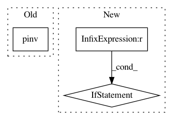

0528bba0156cda78032b698a6fa1c21ff2ebe895,panel/iv/covariance.py,KernelCovariance,s,#KernelCovariance#,157
Before Change
bw = int(bw)
w = self._kernels[kernel](bw)
self._pinvz = pinvz = pinv(z) if self._pinvz is None else self._pinvz
xhat_e = z @ (pinvz @ x) * eps
s = xhat_e.T @ xhat_e
After Change
kernel = self.config["kernel"]
// TODO: Bandwidth selection method
bw = self.config["bw"]
if bw is None:
if kernel in ("newey-west", "bartlett"):
bw = ceil(20 * (nobs / 100) ** (2 / 9))
if kernel in ("andrews", "quadratic-spectral"):
bw = ceil(20 * (nobs / 100) ** (2 / 25))
elif kernel in ("parzen", "gallant"):
bw = ceil(20 * (nobs / 100) ** (4 / 25))
bw = int(bw)
w = self._kernels[kernel](bw)
pinvz = self._pinvz
In pattern: SUPERPATTERN
Frequency: 4
Non-data size: 3
Instances
Project Name: bashtage/linearmodels
Commit Name: 0528bba0156cda78032b698a6fa1c21ff2ebe895
Time: 2017-02-21
Author: kevin.k.sheppard@gmail.com
File Name: panel/iv/covariance.py
Class Name: KernelCovariance
Method Name: s
Project Name: bashtage/linearmodels
Commit Name: b0de6536107cc932a7e5e046d07ae4adf910bbde
Time: 2017-03-28
Author: kevin.k.sheppard@gmail.com
File Name: linearmodels/panel/model.py
Class Name: PanelOLS
Method Name: fit
Project Name: bashtage/linearmodels
Commit Name: 0528bba0156cda78032b698a6fa1c21ff2ebe895
Time: 2017-02-21
Author: kevin.k.sheppard@gmail.com
File Name: panel/iv/covariance.py
Class Name: OneWayClusteredCovariance
Method Name: s
Project Name: nipy/dipy
Commit Name: 689166acceae25a91594a685acdccf20c9140a5c
Time: 2015-09-14
Author: mauro.zucchelli88@gmail.com
File Name: dipy/reconst/shore_cart.py
Class Name: ShoreCartModel
Method Name: fit